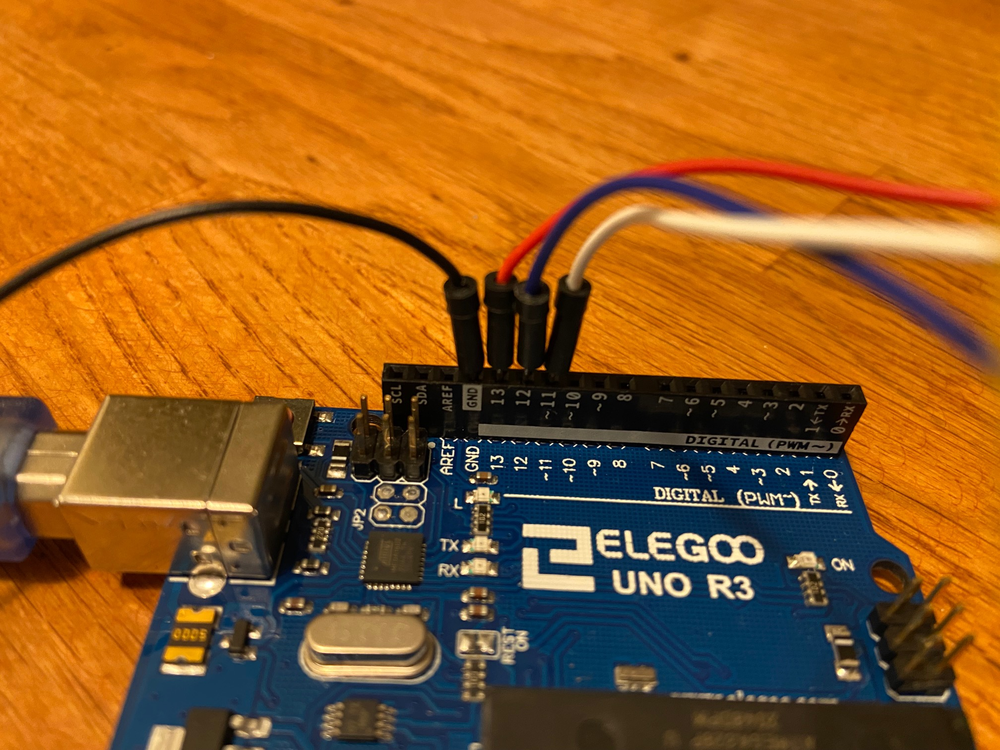
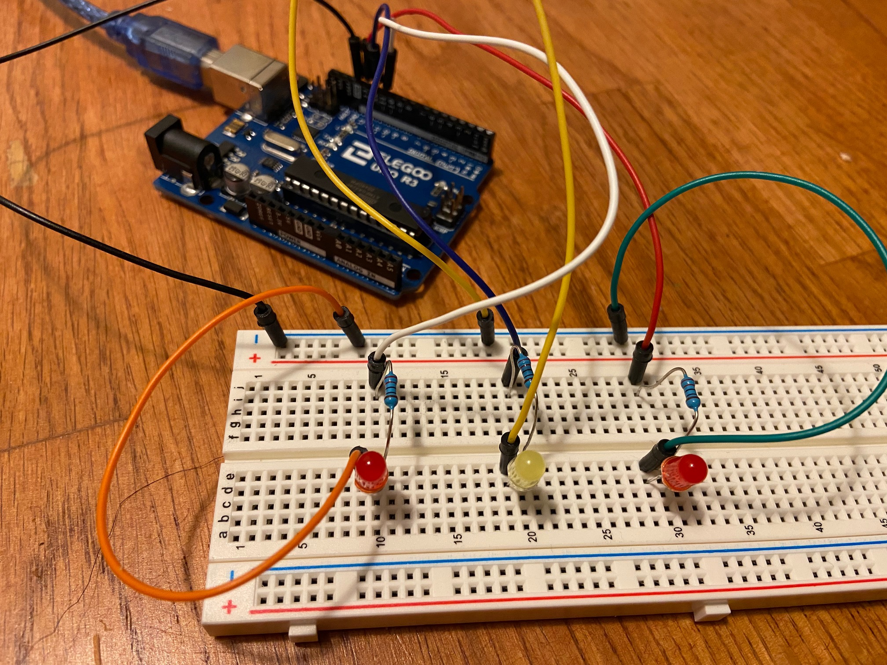
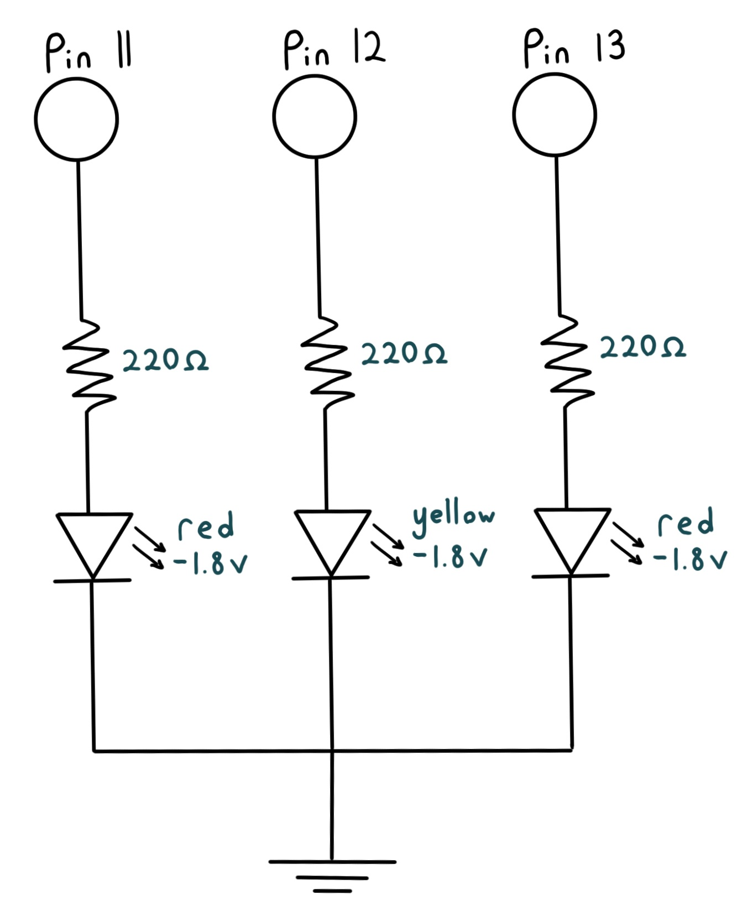

Sydney's Assignment 1 - Blink!
For this assignment, I created a circuit of 3 LEDs which blink in sequence and then together in a pattern.
 
I created circuits starting from pins 11-13, going through 220Ω resistors and red and yellow LEDs, and going to ground.

A schematic of the circuit is shown above. I chose to use 220Ω resistors to keep the current below the 20 mA (.02A) limit of the LEDs. The pins send out 5V when on HIGH, and the red and yellow LEDs cause a 1.8V drop. I calculated the resistance to use based on Ohm's law (V = I*R).
(5 - 1.8)V = .02A * [x]Ω3.2V / .02A = [x]Ω
x = 160
The calculated resistance is 160Ω. I chose to use 220Ω, because it was the next highest value of the resistors I had, and a higher resistance would put the current a little bit lower than the limit.
To turn the LEDs on and off, I wrote code in Arduino based off of the BLINK example code. This included setting up pins 11-13 as outputs,
using a for loop to turn each LED on and off in sequence, and then finally turning each LED on then off at the same time.
I used digitalWrite() to turn the voltage to each pin HIGH or LOW, and used delay() to set time delays between sections.
// the setup function runs once when you press reset or power the board
void setup() {
// initialize digital pins 11-13 as an output.
pinMode(11, OUTPUT);
pinMode(12, OUTPUT);
pinMode(13, OUTPUT);
}
// the loop function runs over and over again forever
void loop() {
// first part of blink pattern; turn on then off 3 LEDs in sequence
//for loop from 11 to 13 (pin numbers)
for (int i = 11; i <= 13; i++){
digitalWrite(i, HIGH); // turn LED [i] on with HIGH voltage
delay(200); // LED is on for .2 seconds
digitalWrite(i, LOW); // turn LED [i] off with LOW voltage
}
delay (200); // .2 second delay after first loop
// second part of blink pattern, all 3 LEDS on then off at the same time
digitalWrite(11, HIGH) // turn LED 11 on with HIGH voltage
digitalWrite(12, HIGH) // turn LED 12 on with HIGH voltage
digitalWrite(13, HIGH) // turn LED 13 on with HIGH voltage
delay(200); // lights are on for .2 seconds
digitalWrite(11, LOW) // turn LED 11 off with LOW voltage
digitalWrite(12, LOW) // turn LED 12 off with LOW voltage
digitalWrite(13, LOW) // turn LED 13 off with LOW voltage
}

The operation of the circuit is shown in this GIF.